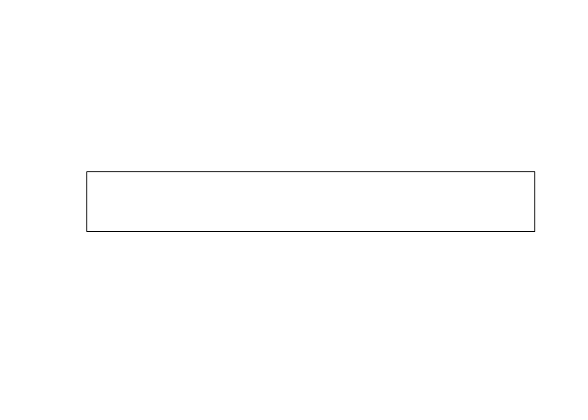
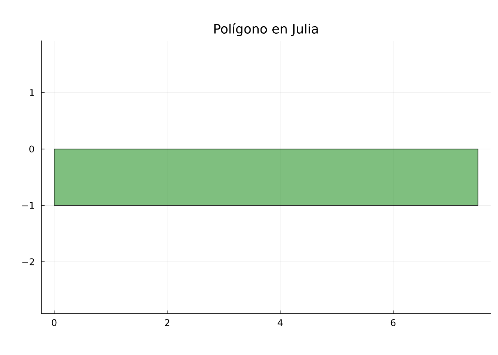

En esta sesión inicial de la Maestría en Geomática, exploraremos la sintaxis básica de los tres lenguajes dominantes en la ciencia de datos espaciales. Utilizaremos el estándar Simple Features y la representación Well-Known Text (WKT) para modelar objetos en el territorio colombiano. En estos ejemplos no se define formalmente un Sistema de Referencia de Coordenadas (CRS por sus siglas en inglés)
Utilizaremos shapely para instanciar objetos espaciales. Nota que shapely por sí solo no gestiona proyecciones; solo manipula la topología y geometría en el plano.
# #| eval: falseimport shapely# Definición de un polígono (coordenadas cartesianas origen 0,0)# Importante: No tiene SRC definido ni unidades específicas.pol_wkt ='POLYGON ((0 0, 0 -1, 7.5 -1, 7.5 0, 0 0))'pol1 = shapely.from_wkt(pol_wkt)print(f"Tipo de objeto: {type(pol1)}")
Tipo de objeto: <class 'shapely.geometry.polygon.Polygon'>
En R, la librería fundamental es sf. Noten que el WKT es un estándar universal. En R, al crear un objeto con st_as_sfc, el parámetro crs queda como NA por defecto, indicando un sistema puramente cartesiano.
# #| eval: falselibrary(sf)
Linking to GEOS 3.12.1, GDAL 3.8.4, PROJ 9.4.0; sf_use_s2() is TRUE
Geometry set for 1 feature
Geometry type: POLYGON
Dimension: XY
Bounding box: xmin: 0 ymin: -1 xmax: 7.5 ymax: 0
CRS: NA
POLYGON ((0 0, 0 -1, 7.5 -1, 7.5 0, 0 0))
plot(pol1)

# El resultado mostrará: CRS: NA
En Julia, la eficiencia se logra mediante LibGEOS.jl.
# #| eval: falsej_plot('# 1. Configuración del entorno (Ejecutar en la primera celda del Notebook)using Pkg# Forzar la activación del proyecto local y añadir los paquetes si no estánif !haskey(Pkg.project().dependencies, "LibGEOS") Pkg.add(["LibGEOS", "Plots", "ArchGDAL", "DataFrames", "LibPQ"])end# 2. Carga de libreríasusing LibGEOSusing Plots# 3. Código de verificaciónpol_wkt = "POLYGON ((0 0, 0 -1, 7.5 -1, 7.5 0, 0 0))"#pol1 = LibGEOS.readWKT(pol_wkt) # Nota: use readWKT que es el estándar de LibGEOS# La función correcta en la API actual es LibGEOS.readgeompol1 = LibGEOS.readgeom(pol_wkt)# Imprimir descripción en consolaprintln("Tipo: ", typeof(pol1))println("WKT: ", pol1)# Imprimir/Visualizar gráfico# Esto requiere que Plots.jl esté instalado y cargadoplot(pol1, title="Polígono en Julia", fillalpha=0.5,fillcolor=:green, aspect_ratio=:equal)')
Starting Julia ...
julia> # 1. Configuración del entorno (Ejecutar en la primera celda del Notebook)
using Pkg
# Forzar la activación del proyecto local y añadir los paquetes si no están
julia> if !haskey(Pkg.project().dependencies, "LibGEOS")
Pkg.add(["LibGEOS", "Plots", "ArchGDAL", "DataFrames", "LibPQ"])
end
# 2. Carga de librerías
julia> using LibGEOS
julia> using Plots
# 3. Código de verificación
julia> pol_wkt = "POLYGON ((0 0, 0 -1, 7.5 -1, 7.5 0, 0 0))"
#pol1 = LibGEOS.readWKT(pol_wkt) # Nota: use readWKT que es el estándar de LibGEOS
# La función correcta en la API actual es LibGEOS.readgeom
"POLYGON ((0 0, 0 -1, 7.5 -1, 7.5 0, 0 0))"
julia> pol1 = LibGEOS.readgeom(pol_wkt)
# Imprimir descripción en consola
Polygon(Ptr{Nothing} @0x000000000d2f40f0, LibGEOS.GEOSContext(Ptr{Nothing} @0x000000000d9b1f10))
julia> println("Tipo: ", typeof(pol1))
Tipo: Polygon
julia> println("WKT: ", pol1)
# Imprimir/Visualizar gráfico
# Esto requiere que Plots.jl esté instalado y cargado
WKT: POLYGON ((0 0, 0 -1, 7.5 -1, 7.5 0, 0 0))
julia> plot(pol1, title="Polígono en Julia", fillalpha=0.5,fillcolor=:green, aspect_ratio=:equal)

5.2 2. Estructuras de Datos y Geometría en Colombia
Listas y Tuplas (Colecciones de Puntos)
Utilizaremos listas para agrupar coordenadas de ciudades principales.